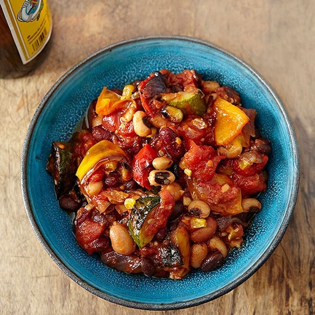

Matchu's Roasty Veggie Chili

Description
It's chili, with roasted veggies instead of meat. Just pulling this out of my head.
Will have to try cooking it later and update the recipe as needed. Serves 4-6.
Ingredients
- One 15 oz can kidney beans, rinsed and drained
- One 15 oz can white or pinto beans, rinsed and drained
- One 15 oz can black beans, rinsed and drained
- Two 15 oz can diced tomato
- One large yellow onion, roughly diced
- One large carrot, sliced into 1/4in disks
- One green or yellow bell pepper, cored, seeds remove, cut in half
- One red bell pepper, cored, seeds remove, cut in half
- One medium zucchini, slice in half length-wise then cut into 1/4in half-disks
- One cup frozen corn
- One large Anaheim pepper, cored, seeds remove, cut in half
- Three large cloves garlic, 1/4in diced
- Three tbsp olive oil
- Two tbsp chopped cilantro
- 1/2 tbsp brown sugar
- 1/4 tsp ground cayenne pepper or to taste
- 1/2 tsp smokey paprika
- 1/2 tsp coriander
- One tsp cumin
- Two tbsp sour cream
- Salt and pepper to taste
Equipment
- Large pot for stewing the chili
- Baking sheet for roasting the veggies
Preparation
- Preheat oven to 450F
- On baking sheet, toss onion, carrot, zucchini, and corn with olive oil, salt and pepper
- Brush front and back of all peppers with olive oil,
then place cut-side down on baking sheet
- Roast 15-30 minutes until softened and brown around edges
- Remove peppers and slice into 1/4in strips
- Combine roasted veggies with all other ingredients (except cilantro) in a large pot
- Stew over medium heat for 30 minutes, stirring occasionally
- Salt and pepper to taste
- Serve in bowls with cilantro garnish and a dollop of sour cream
Enjoy with your favorite cold beverage!